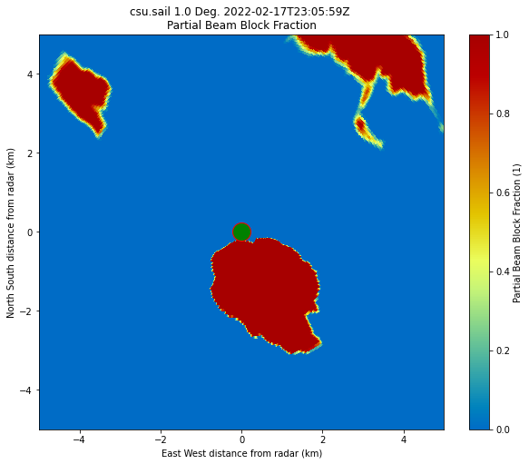

Beam Blockage for SAIL#
import pyart
import wradlib as wrl
import cartopy.crs as ccrs
import numpy as np
import matplotlib.pyplot as plt
## You are using the Python ARM Radar Toolkit (Py-ART), an open source
## library for working with weather radar data. Py-ART is partly
## supported by the U.S. Department of Energy as part of the Atmospheric
## Radiation Measurement (ARM) Climate Research Facility, an Office of
## Science user facility.
##
## If you use this software to prepare a publication, please cite:
##
## JJ Helmus and SM Collis, JORS 2016, doi: 10.5334/jors.119
radar = pyart.io.read('/home/zsherman/Downloads/xprecipradar_guc_volume_20220217-230559.b1.nc')
radar.fields.keys()
dict_keys(['DBZ', 'VEL', 'WIDTH', 'ZDR', 'PHIDP', 'RHOHV', 'NCP', 'SNR', 'DBZhv'])
display = pyart.graph.RadarMapDisplay(radar)
/home/zsherman/anaconda3/envs/pyart_env/lib/python3.8/site-packages/cartopy/crs.py:2320: DeprecationWarning: `np.float` is a deprecated alias for the builtin `float`. To silence this warning, use `float` by itself. Doing this will not modify any behavior and is safe. If you specifically wanted the numpy scalar type, use `np.float64` here.
Deprecated in NumPy 1.20; for more details and guidance: https://numpy.org/devdocs/release/1.20.0-notes.html#deprecations
a = np.float(self.globe.semimajor_axis or WGS84_SEMIMAJOR_AXIS)
/home/zsherman/anaconda3/envs/pyart_env/lib/python3.8/site-packages/cartopy/crs.py:2321: DeprecationWarning: `np.float` is a deprecated alias for the builtin `float`. To silence this warning, use `float` by itself. Doing this will not modify any behavior and is safe. If you specifically wanted the numpy scalar type, use `np.float64` here.
Deprecated in NumPy 1.20; for more details and guidance: https://numpy.org/devdocs/release/1.20.0-notes.html#deprecations
b = np.float(self.globe.semiminor_axis or a)
fig = plt.figure(figsize=(10, 10))
display.plot_ppi_map('DBZ', 0)
/home/zsherman/dev/pyart/pyart/graph/radarmapdisplay.py:281: UserWarning: No projection was defined for the axes. Overridding defined axes and using default axes with projection Lambert Conformal.
warnings.warn(
radar.altitude['data']
masked_array(data=[3149.19995117],
mask=False,
fill_value=1e+20)
radar.nsweeps
8
tif_file = '/home/zsherman/Downloads/sail.tif'
#tif_file = '/home/zsherman/Downloads/dsm_mosaic_min_phase_me.tif'
#tif_file = '/home/zsherman/Downloads/tch_mosaic_min_phase_me.tif'
def beam_block(radar, tif_file, radar_height_offset=10.0,
beam_width=1.0):
"""
Beam Block Radar Calculation.
Parameters
----------
radar : Radar
Radar object used.
tif_name : string
Name of geotiff file to use for the
calculation.
radar_height_offset : float
Add height to the radar altitude for radar towers.
Other Parameters
----------------
beam_width : float
Radar's beam width for calculation.
Default value is 1.0.
Returns
-------
pbb_all : array
Array of partial beam block fractions for each
gate in all sweeps.
cbb_all : array
Array of cumulative beam block fractions for
each gate in all sweeps.
References
----------
Bech, J., B. Codina, J. Lorente, and D. Bebbington,
2003: The sensitivity of single polarization weather
radar beam blockage correction to variability in the
vertical refractivity gradient. J. Atmos. Oceanic
Technol., 20, 845–855
Heistermann, M., Jacobi, S., and Pfaff, T., 2013:
Technical Note: An open source library for processing
weather radar data (wradlib), Hydrol. Earth Syst.
Sci., 17, 863-871, doi:10.5194/hess-17-863-2013
Helmus, J.J. & Collis, S.M., (2016). The Python ARM
Radar Toolkit (Py-ART), a Library for Working with
Weather Radar Data in the Python Programming Language.
Journal of Open Research Software. 4(1), p.e25.
DOI: http://doi.org/10.5334/jors.119
"""
# Opening the tif file and getting the values ready to be
# converted into polar values.
rasterfile = tif_file
data_raster = wrl.io.open_raster(rasterfile)
rastervalues, rastercoords, proj = wrl.georef.extract_raster_dataset(
data_raster, nodata=None)
#rastervalues_, rastercoords_, proj = wrl.georef.extract_raster_dataset(data_raster, nodata=-32768.)
sitecoords = (np.float(radar.longitude['data']),
np.float(radar.latitude['data']),
np.float(radar.altitude['data'] + radar_height_offset))
pbb_arrays = []
cbb_arrays = []
_range = radar.range['data']
beamradius = wrl.util.half_power_radius(_range, beam_width)
# Cycling through all sweeps in the radar object.
print('Calculating beam blockage.')
del data_raster
for i in range(len(radar.sweep_start_ray_index['data'])):
index_start = radar.sweep_start_ray_index['data'][i]
index_end = radar.sweep_end_ray_index['data'][i] + 1
elevs = radar.elevation['data'][index_start:index_end]
azimuths = radar.azimuth['data'][index_start:index_end]
rg, azg = np.meshgrid(_range, azimuths)
rg, eleg = np.meshgrid(_range, elevs)
nrays = azimuths.shape[0] # number of rays
nbins = radar.ngates # number of range bins
bw = beam_width # half power beam width (deg)
range_res = 60. # range resolution (meters)
el = radar.fixed_angle['data'][i]
coord = wrl.georef.sweep_centroids(nrays, range_res, nbins, el)
coords = wrl.georef.spherical_to_proj(rg, azg, eleg,
sitecoords, proj=proj)
lon = coords[..., 0]
lat = coords[..., 1]
alt = coords[..., 2]
polcoords = coords[..., :2]
rlimits = (lon.min(), lat.min(), lon.max(), lat.max())
#Clip the region inside our bounding box
ind = wrl.util.find_bbox_indices(rastercoords, rlimits)
rastercoords = rastercoords[ind[0]:ind[3], ind[0]:ind[2], ...]
rastervalues = rastervalues[ind[0]:ind[3], ind[0]:ind[2]]
polarvalues = wrl.ipol.cart_to_irregular_spline(
rastercoords, rastervalues, polcoords, order=3,
prefilter=False)
# Calculate partial beam blockage using wradlib.
pbb = wrl.qual.beam_block_frac(polarvalues, alt, beamradius)
pbb = np.ma.masked_invalid(pbb)
pbb[pbb < 0] = 0.0
pbb[pbb > 1] = 1.0
pbb_arrays.append(pbb)
# Calculate cumulative beam blockage using wradlib.
cbb = wrl.qual.cum_beam_block_frac(pbb)
cbb_arrays.append(cbb)
pbb_all = np.ma.concatenate(pbb_arrays)
cbb_all = np.ma.concatenate(cbb_arrays)
return pbb_all, cbb_all
def pbb_to_dict(pbb_all):
""" Function that takes the pbb_all array and turns
it into a dictionary to be used and added to the
pyart radar object. """
pbb_dict = {}
pbb_dict['coordinates'] = 'elevation azimuth range'
pbb_dict['units'] = '1'
pbb_dict['data'] = pbb_all
pbb_dict['long_name'] = 'Partial Beam Block Fraction'
pbb_dict['comment'] = 'Partial beam block fraction due to terrain.'
return pbb_dict
def cbb_to_dict(cbb_all):
""" Function that takes the cbb_all array and turns
it into a dictionary to be used and added to the
pyart radar object. """
cbb_dict = {}
cbb_dict['coordinates'] = 'elevation azimuth range'
cbb_dict['units'] = '1'
cbb_dict['data'] = cbb_all
cbb_dict['long_name'] = 'Cumulative Beam Block Fraction'
cbb_dict['comment'] = 'Cumulative beam block fraction due to terrain.'
return cbb_dict
def cbb_flags_to_dict(cbb_flags):
""" Function that takes the cbb_flag array and turns
it into a dictionary to be used and added to the
pyart radar object. """
cbb_dict = {}
cbb_dict['coordinates'] = 'elevation azimuth range'
cbb_dict['units'] = '1'
cbb_dict['data'] = cbb_flags
cbb_dict['long_name'] = 'Cumulative Beam Block Fraction Flag'
cbb_dict['comment'] = 'Cumulative beam block flag due to terrain.'
return cbb_dict
Needed to fix range offset otherwise cumulative beam blockage is wrong#
radar.range
{'long_name': 'range_to_measurement_volume',
'units': 'meters',
'standard_name': 'projection_range_coordinate',
'spacing_is_constant': 'true',
'meters_to_center_of_first_gate': -112.830795,
'meters_between_gates': 59.94095,
'axis': 'radial_range_coordinate',
'data': masked_array(data=[-1.12830795e+02, -5.28898468e+01, 7.05110168e+00,
6.69920502e+01, 1.26932999e+02, 1.86873947e+02,
2.46814896e+02, 3.06755859e+02, 3.66696808e+02,
4.26637756e+02, 4.86578705e+02, 5.46519653e+02,
6.06460571e+02, 6.66401489e+02, 7.26342529e+02,
7.86283447e+02, 8.46224365e+02, 9.06165344e+02,
9.66106323e+02, 1.02604724e+03, 1.08598816e+03,
1.14592908e+03, 1.20587012e+03, 1.26581104e+03,
1.32575195e+03, 1.38569299e+03, 1.44563379e+03,
1.50557483e+03, 1.56551587e+03, 1.62545667e+03,
1.68539771e+03, 1.74533862e+03, 1.80527954e+03,
1.86522058e+03, 1.92516150e+03, 1.98510242e+03,
2.04504346e+03, 2.10498413e+03, 2.16492529e+03,
2.22486621e+03, 2.28480713e+03, 2.34474829e+03,
2.40468896e+03, 2.46462988e+03, 2.52457104e+03,
2.58451196e+03, 2.64445288e+03, 2.70439380e+03,
2.76433472e+03, 2.82427563e+03, 2.88421680e+03,
2.94415771e+03, 3.00409839e+03, 3.06403955e+03,
3.12398047e+03, 3.18392139e+03, 3.24386255e+03,
3.30380322e+03, 3.36374414e+03, 3.42368530e+03,
3.48362622e+03, 3.54356714e+03, 3.60350806e+03,
3.66344897e+03, 3.72338989e+03, 3.78333105e+03,
3.84327197e+03, 3.90321265e+03, 3.96315381e+03,
4.02309473e+03, 4.08303564e+03, 4.14297656e+03,
4.20291748e+03, 4.26285889e+03, 4.32279932e+03,
4.38274023e+03, 4.44268115e+03, 4.50262207e+03,
4.56256299e+03, 4.62250439e+03, 4.68244531e+03,
4.74238623e+03, 4.80232715e+03, 4.86226807e+03,
4.92220850e+03, 4.98214990e+03, 5.04209082e+03,
5.10203174e+03, 5.16197266e+03, 5.22191357e+03,
5.28185449e+03, 5.34179590e+03, 5.40173682e+03,
5.46167773e+03, 5.52161816e+03, 5.58155908e+03,
5.64150000e+03, 5.70144141e+03, 5.76138232e+03,
5.82132324e+03, 5.88126416e+03, 5.94120508e+03,
6.00114600e+03, 6.06108740e+03, 6.12102783e+03,
6.18096875e+03, 6.24090967e+03, 6.30085059e+03,
6.36079150e+03, 6.42073291e+03, 6.48067383e+03,
6.54061475e+03, 6.60055566e+03, 6.66049658e+03,
6.72043701e+03, 6.78037842e+03, 6.84031934e+03,
6.90026025e+03, 6.96020117e+03, 7.02014209e+03,
7.08008301e+03, 7.14002441e+03, 7.19996533e+03,
7.25990625e+03, 7.31984668e+03, 7.37978760e+03,
7.43972852e+03, 7.49966992e+03, 7.55961084e+03,
7.61955176e+03, 7.67949268e+03, 7.73943359e+03,
7.79937451e+03, 7.85931543e+03, 7.91925635e+03,
7.97919727e+03, 8.03913818e+03, 8.09907910e+03,
8.15902002e+03, 8.21896094e+03, 8.27890234e+03,
8.33884277e+03, 8.39878418e+03, 8.45872559e+03,
8.51866602e+03, 8.57860742e+03, 8.63854785e+03,
8.69848926e+03, 8.75842969e+03, 8.81837012e+03,
8.87831152e+03, 8.93825195e+03, 8.99819336e+03,
9.05813379e+03, 9.11807520e+03, 9.17801660e+03,
9.23795703e+03, 9.29789844e+03, 9.35783887e+03,
9.41778027e+03, 9.47772168e+03, 9.53766211e+03,
9.59760352e+03, 9.65754395e+03, 9.71748535e+03,
9.77742578e+03, 9.83736719e+03, 9.89730859e+03,
9.95724805e+03, 1.00171895e+04, 1.00771299e+04,
1.01370713e+04, 1.01970117e+04, 1.02569531e+04,
1.03168945e+04, 1.03768350e+04, 1.04367764e+04,
1.04967168e+04, 1.05566582e+04, 1.06165996e+04,
1.06765400e+04, 1.07364814e+04, 1.07964219e+04,
1.08563633e+04, 1.09163047e+04, 1.09762451e+04,
1.10361865e+04, 1.10961270e+04, 1.11560674e+04,
1.12160078e+04, 1.12759492e+04, 1.13358906e+04,
1.13958311e+04, 1.14557725e+04, 1.15157129e+04,
1.15756543e+04, 1.16355947e+04, 1.16955361e+04,
1.17554775e+04, 1.18154180e+04, 1.18753594e+04,
1.19352998e+04, 1.19952412e+04, 1.20551826e+04,
1.21151230e+04, 1.21750645e+04, 1.22350049e+04,
1.22949453e+04, 1.23548857e+04, 1.24148271e+04,
1.24747686e+04, 1.25347090e+04, 1.25946504e+04,
1.26545908e+04, 1.27145322e+04, 1.27744736e+04,
1.28344141e+04, 1.28943555e+04, 1.29542959e+04,
1.30142373e+04, 1.30741777e+04, 1.31341191e+04,
1.31940605e+04, 1.32540010e+04, 1.33139424e+04,
1.33738828e+04, 1.34338242e+04, 1.34937646e+04,
1.35537051e+04, 1.36136465e+04, 1.36735869e+04,
1.37335283e+04, 1.37934688e+04, 1.38534102e+04,
1.39133516e+04, 1.39732920e+04, 1.40332334e+04,
1.40931738e+04, 1.41531152e+04, 1.42130566e+04,
1.42729971e+04, 1.43329385e+04, 1.43928789e+04,
1.44528203e+04, 1.45127607e+04, 1.45727021e+04,
1.46326436e+04, 1.46925830e+04, 1.47525244e+04,
1.48124648e+04, 1.48724062e+04, 1.49323477e+04,
1.49922881e+04, 1.50522295e+04, 1.51121699e+04,
1.51721113e+04, 1.52320518e+04, 1.52919932e+04,
1.53519346e+04, 1.54118750e+04, 1.54718164e+04,
1.55317568e+04, 1.55916982e+04, 1.56516396e+04,
1.57115801e+04, 1.57715215e+04, 1.58314609e+04,
1.58914023e+04, 1.59513428e+04, 1.60112842e+04,
1.60712256e+04, 1.61311660e+04, 1.61911074e+04,
1.62510479e+04, 1.63109893e+04, 1.63709307e+04,
1.64308711e+04, 1.64908125e+04, 1.65507539e+04,
1.66106934e+04, 1.66706348e+04, 1.67305762e+04,
1.67905176e+04, 1.68504570e+04, 1.69103984e+04,
1.69703398e+04, 1.70302812e+04, 1.70902207e+04,
1.71501641e+04, 1.72101035e+04, 1.72700449e+04,
1.73299844e+04, 1.73899277e+04, 1.74498672e+04,
1.75098086e+04, 1.75697500e+04, 1.76296895e+04,
1.76896309e+04, 1.77495703e+04, 1.78095137e+04,
1.78694531e+04, 1.79293945e+04, 1.79893359e+04,
1.80492773e+04, 1.81092168e+04, 1.81691602e+04,
1.82290996e+04, 1.82890410e+04, 1.83489805e+04,
1.84089238e+04, 1.84688633e+04, 1.85288047e+04,
1.85887461e+04, 1.86486875e+04, 1.87086270e+04,
1.87685684e+04, 1.88285098e+04, 1.88884492e+04,
1.89483906e+04, 1.90083320e+04, 1.90682734e+04,
1.91282129e+04, 1.91881543e+04, 1.92480957e+04,
1.93080371e+04, 1.93679766e+04, 1.94279199e+04,
1.94878594e+04, 1.95478008e+04, 1.96077402e+04,
1.96676836e+04, 1.97276230e+04, 1.97875645e+04,
1.98475059e+04, 1.99074473e+04, 1.99673867e+04,
2.00273281e+04, 2.00872695e+04, 2.01472090e+04,
2.02071504e+04, 2.02670918e+04, 2.03270332e+04,
2.03869727e+04, 2.04469160e+04, 2.05068555e+04,
2.05667969e+04, 2.06267363e+04, 2.06866797e+04,
2.07466191e+04, 2.08065605e+04, 2.08665020e+04,
2.09264434e+04, 2.09863828e+04, 2.10463262e+04,
2.11062656e+04, 2.11662051e+04, 2.12261465e+04,
2.12860879e+04, 2.13460293e+04, 2.14059688e+04,
2.14659121e+04, 2.15258516e+04, 2.15857930e+04,
2.16457324e+04, 2.17056758e+04, 2.17656152e+04,
2.18255566e+04, 2.18854980e+04, 2.19454395e+04,
2.20053789e+04, 2.20653203e+04, 2.21252617e+04,
2.21852031e+04, 2.22451426e+04, 2.23050859e+04,
2.23650254e+04, 2.24249648e+04, 2.24849062e+04,
2.25448477e+04, 2.26047891e+04, 2.26647285e+04,
2.27246719e+04, 2.27846113e+04, 2.28445527e+04,
2.29044941e+04, 2.29644355e+04, 2.30243750e+04,
2.30843164e+04, 2.31442578e+04, 2.32041992e+04,
2.32641387e+04, 2.33240820e+04, 2.33840215e+04,
2.34439629e+04, 2.35039023e+04, 2.35638438e+04,
2.36237852e+04, 2.36837246e+04, 2.37436680e+04,
2.38036074e+04, 2.38635488e+04, 2.39234883e+04,
2.39834316e+04, 2.40433711e+04, 2.41033125e+04,
2.41632539e+04, 2.42231953e+04, 2.42831348e+04,
2.43430781e+04, 2.44030176e+04, 2.44629590e+04,
2.45228984e+04, 2.45828418e+04, 2.46427812e+04,
2.47027207e+04, 2.47626641e+04, 2.48226035e+04,
2.48825449e+04, 2.49424844e+04, 2.50024277e+04,
2.50623672e+04, 2.51223086e+04, 2.51822500e+04,
2.52421914e+04, 2.53021309e+04, 2.53620723e+04,
2.54220137e+04, 2.54819551e+04, 2.55418945e+04,
2.56018379e+04, 2.56617773e+04, 2.57217188e+04,
2.57816602e+04, 2.58416016e+04, 2.59015410e+04,
2.59614805e+04, 2.60214238e+04, 2.60813633e+04,
2.61413047e+04, 2.62012461e+04, 2.62611875e+04,
2.63211270e+04, 2.63810684e+04, 2.64410098e+04,
2.65009512e+04, 2.65608906e+04, 2.66208340e+04,
2.66807734e+04, 2.67407148e+04, 2.68006543e+04,
2.68605977e+04, 2.69205371e+04, 2.69804785e+04,
2.70404199e+04, 2.71003594e+04, 2.71603008e+04,
2.72202402e+04, 2.72801836e+04, 2.73401230e+04,
2.74000645e+04, 2.74600059e+04, 2.75199473e+04,
2.75798867e+04, 2.76398301e+04, 2.76997695e+04,
2.77597109e+04, 2.78196504e+04, 2.78795938e+04,
2.79395332e+04, 2.79994746e+04, 2.80594160e+04,
2.81193574e+04, 2.81792969e+04, 2.82392363e+04,
2.82991797e+04, 2.83591191e+04, 2.84190605e+04,
2.84790020e+04, 2.85389434e+04, 2.85988828e+04,
2.86588262e+04, 2.87187656e+04, 2.87787070e+04,
2.88386465e+04, 2.88985898e+04, 2.89585293e+04,
2.90184707e+04, 2.90784121e+04, 2.91383535e+04,
2.91982930e+04, 2.92582344e+04, 2.93181758e+04,
2.93781172e+04, 2.94380566e+04, 2.94979980e+04,
2.95579395e+04, 2.96178789e+04, 2.96778203e+04,
2.97377617e+04, 2.97977031e+04, 2.98576426e+04,
2.99175859e+04, 2.99775254e+04, 3.00374668e+04,
3.00974062e+04, 3.01573496e+04, 3.02172891e+04,
3.02772305e+04, 3.03371719e+04, 3.03971133e+04,
3.04570527e+04, 3.05169961e+04, 3.05769355e+04,
3.06368750e+04, 3.06968164e+04, 3.07567578e+04,
3.08166992e+04, 3.08766387e+04, 3.09365820e+04,
3.09965215e+04, 3.10564629e+04, 3.11164023e+04,
3.11763457e+04, 3.12362852e+04, 3.12962266e+04,
3.13561680e+04, 3.14161094e+04, 3.14760488e+04,
3.15359902e+04, 3.15959316e+04, 3.16558730e+04,
3.17158125e+04, 3.17757539e+04, 3.18356953e+04,
3.18956348e+04, 3.19555781e+04, 3.20155176e+04,
3.20754590e+04, 3.21353984e+04, 3.21953418e+04,
3.22552812e+04, 3.23152227e+04, 3.23751641e+04,
3.24351055e+04, 3.24950449e+04, 3.25549863e+04,
3.26149277e+04, 3.26748691e+04, 3.27348086e+04,
3.27947500e+04, 3.28546914e+04, 3.29146328e+04,
3.29745742e+04, 3.30345117e+04, 3.30944570e+04,
3.31543945e+04, 3.32143359e+04, 3.32742773e+04,
3.33342188e+04, 3.33941602e+04, 3.34541016e+04,
3.35140430e+04, 3.35739805e+04, 3.36339258e+04,
3.36938633e+04, 3.37538047e+04, 3.38137461e+04,
3.38736875e+04, 3.39336289e+04, 3.39935703e+04,
3.40535078e+04, 3.41134531e+04, 3.41733945e+04,
3.42333320e+04, 3.42932734e+04, 3.43532148e+04,
3.44131562e+04, 3.44730977e+04, 3.45330391e+04,
3.45929766e+04, 3.46529219e+04, 3.47128594e+04,
3.47728008e+04, 3.48327422e+04, 3.48926836e+04,
3.49526250e+04, 3.50125664e+04, 3.50725039e+04,
3.51324492e+04, 3.51923906e+04, 3.52523281e+04,
3.53122695e+04, 3.53722109e+04, 3.54321523e+04,
3.54920938e+04, 3.55520312e+04, 3.56119727e+04,
3.56719180e+04, 3.57318555e+04, 3.57917969e+04,
3.58517383e+04, 3.59116797e+04, 3.59716211e+04,
3.60315625e+04, 3.60915000e+04, 3.61514453e+04,
3.62113867e+04, 3.62713242e+04, 3.63312656e+04,
3.63912109e+04, 3.64511484e+04, 3.65110898e+04,
3.65710273e+04, 3.66309688e+04, 3.66909141e+04,
3.67508516e+04, 3.68107930e+04, 3.68707344e+04,
3.69306758e+04, 3.69906172e+04, 3.70505586e+04,
3.71104961e+04, 3.71704414e+04, 3.72303828e+04,
3.72903203e+04, 3.73502617e+04, 3.74102070e+04,
3.74701445e+04, 3.75300859e+04, 3.75900234e+04,
3.76499688e+04, 3.77099102e+04, 3.77698477e+04,
3.78297891e+04, 3.78897305e+04, 3.79496719e+04,
3.80096133e+04, 3.80695547e+04, 3.81294922e+04,
3.81894375e+04, 3.82493789e+04, 3.83093164e+04,
3.83692578e+04, 3.84292031e+04, 3.84891406e+04,
3.85490820e+04, 3.86090195e+04, 3.86689648e+04,
3.87289062e+04, 3.87888438e+04, 3.88487852e+04,
3.89087266e+04, 3.89686680e+04, 3.90286094e+04,
3.90885508e+04, 3.91484883e+04, 3.92084336e+04,
3.92683750e+04, 3.93283125e+04, 3.93882539e+04,
3.94481953e+04, 3.95081367e+04, 3.95680781e+04,
3.96280156e+04, 3.96879609e+04, 3.97479023e+04,
3.98078398e+04, 3.98677812e+04, 3.99277266e+04,
3.99876641e+04, 4.00476055e+04, 4.01075469e+04,
4.01674844e+04, 4.02274297e+04, 4.02873711e+04],
mask=False,
fill_value=1e+20,
dtype=float32)}
radar.range['data'] = radar.range['data'] + (59.94095*2)
radar.init_gate_altitude()
radar.init_gate_longitude_latitude()
radar.range['data'][0:4]
masked_array(data=[ 7.0511017, 66.99205 , 126.933 , 186.87395 ],
mask=False,
fill_value=1e+20,
dtype=float32)
Calculate PBB and CBB#
pbb, cbb = beam_block(radar, tif_file, radar_height_offset=10.0, beam_width=1.0)
/tmp/ipykernel_24697/2466937760.py:51: DeprecationWarning: `np.float` is a deprecated alias for the builtin `float`. To silence this warning, use `float` by itself. Doing this will not modify any behavior and is safe. If you specifically wanted the numpy scalar type, use `np.float64` here.
Deprecated in NumPy 1.20; for more details and guidance: https://numpy.org/devdocs/release/1.20.0-notes.html#deprecations
sitecoords = (np.float(radar.longitude['data']),
/tmp/ipykernel_24697/2466937760.py:52: DeprecationWarning: `np.float` is a deprecated alias for the builtin `float`. To silence this warning, use `float` by itself. Doing this will not modify any behavior and is safe. If you specifically wanted the numpy scalar type, use `np.float64` here.
Deprecated in NumPy 1.20; for more details and guidance: https://numpy.org/devdocs/release/1.20.0-notes.html#deprecations
np.float(radar.latitude['data']),
/tmp/ipykernel_24697/2466937760.py:53: DeprecationWarning: `np.float` is a deprecated alias for the builtin `float`. To silence this warning, use `float` by itself. Doing this will not modify any behavior and is safe. If you specifically wanted the numpy scalar type, use `np.float64` here.
Deprecated in NumPy 1.20; for more details and guidance: https://numpy.org/devdocs/release/1.20.0-notes.html#deprecations
np.float(radar.altitude['data'] + radar_height_offset))
Calculating beam blockage.
/home/zsherman/anaconda3/envs/pyart_env/lib/python3.8/site-packages/wradlib/qual.py:127: RuntimeWarning: invalid value encountered in sqrt
numer = (ya * np.sqrt(a**2 - y**2)) + (a * np.arcsin(ya)) + (np.pi * a / 2.0)
/home/zsherman/anaconda3/envs/pyart_env/lib/python3.8/site-packages/wradlib/qual.py:127: RuntimeWarning: invalid value encountered in arcsin
numer = (ya * np.sqrt(a**2 - y**2)) + (a * np.arcsin(ya)) + (np.pi * a / 2.0)
pbb_dict = pbb_to_dict(pbb)
cbb_dict = cbb_to_dict(cbb)
radar.add_field('partial_beam_blockage', pbb_dict, replace_existing=True)
radar.add_field('cumulative_beam_blockage', cbb_dict, replace_existing=True)
radar.fields['partial_beam_blockage']['data'].min()
0.0
fig = plt.figure(figsize=(10, 8))
display.plot_ppi('partial_beam_blockage', 0, cmap='pyart_HomeyerRainbow')
plt.plot(0, 0, marker="o", markersize=20, markeredgecolor="red", markerfacecolor="green")
plt.xlim(-5, 5)
plt.ylim(-5, 5)
plt.savefig('/home/zsherman/pbb_sail_zoomed.png')

pbb[:, 0:5]
masked_array(
data=[[0., 0., 0., 0., 0.],
[0., 0., 0., 0., 0.],
[0., 0., 0., 0., 0.],
...,
[0., 0., 0., 0., 0.],
[0., 0., 0., 0., 0.],
[0., 0., 0., 0., 0.]],
mask=False,
fill_value=1e+20)
See the blockage diminish as fixed angle increases#
fig = plt.figure(figsize=(10, 8))
display.plot_ppi('cumulative_beam_blockage', 2, cmap='pyart_HomeyerRainbow')
plt.savefig('/home/zsherman/cbb.png')
def beam_block_flags(cbb_all, complete_block_thresh=0.95):
"""
Takes CBB arrays created from the beam_block function and creates beam block flags.
Parameters
----------
cbb_all : array
Array of cumulative beam blockage values created from the beam_block
function.
Other Parameters
----------------
complete_block_thresh : float
Value for the cutoff for complete blockage flag value of 1. Anything
above the complete_block_thres is considered blocked. Default value
is 0.95.
Returns
-------
cbb_flags : array
Array of integer values depicting no, partial, and complete beam
blockage based on the cumulative beam blockage data. This array can
then be used to create a cumulative beam block flags field.
"""
cbb_flags = np.ones(cbb_all.shape)
cbb_flags[cbb_all < complete_block_thresh] = 0
return cbb_flags
cbb_flags = beam_block_flags(cbb, complete_block_thresh=0.80)
cbb_flag_dict = cbb_flags_to_dict(cbb_flags)
radar.add_field('cbb_flag', cbb_flag_dict, replace_existing=True)
fig = plt.figure(figsize=(10, 8))
display.plot_ppi('cbb_flag', 2, cmap='pyart_HomeyerRainbow')
plt.savefig('/home/zsherman/cbb_flag.png')
fields = []
for field in radar.fields.keys():
fields.append(field)
fields
['DBZ',
'VEL',
'WIDTH',
'ZDR',
'PHIDP',
'RHOHV',
'NCP',
'SNR',
'DBZhv',
'partial_beam_blockage',
'cumulative_beam_blockage',
'cbb_flag']
for field in fields:
if field == 'cbb_flag':
continue
elif field == 'cumulative_beam_blockage':
continue
else:
radar.fields.pop(field)
radar.fields.keys()
dict_keys(['cumulative_beam_blockage', 'cbb_flag'])
pyart.io.write_cfradial('/home/zsherman/flag_radar.nc', radar)